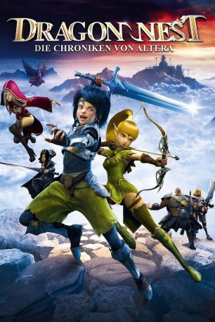
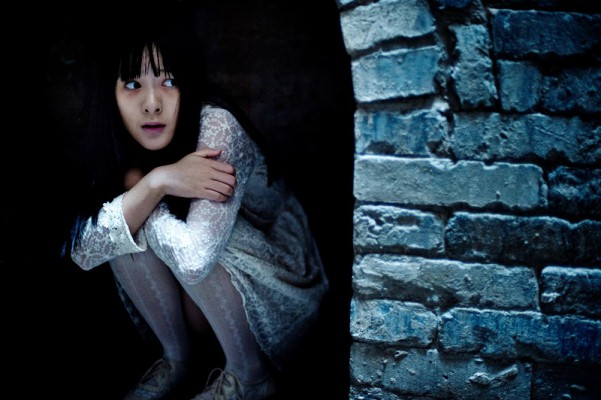

#6838 Dragon Nest - Die Chroniken von Altera
 
 IMDB-Wertung: 6.4 / 10
IMDB-Wertung: 6.4 / 10  Metascore: 0
Metascore: 0 
Als der Junge Lambert von einer Horde wilder Monster attackiert wird, kann er sich gerade noch auf das Schiff des Söldners Arnac retten. Zusammen mit der Elfin Liya und anderen Kriegern machen sie sich auf den Weg in die Schwarzen Berge um den Schwarzen Drache und seinen mächtigen Edelstein zu finden. Denn der Einfluss des Bösen steigt: Gefährliche Kreaturen greifen immer wieder die Bewohner Alteras an. Der magische Juwel muss vernichtet werden, sonst wird die Heimat der Menschen und Elfen untergehen ...
Jahr: 2014
Dauer: 87 Minuten
FSK: 12
Land: China Studio: Splendid FilmTonspuren: DTS - ,
Untertitel: Deutsch,
Auflösung: 1080p (1920x1040) Größe: 6328 MB
Genre: Abenteuer, Fantasy, Animation/Trick, Familie
Regisseur: Yuefeng Song
Drehbuch: Eric Amadio
Soundtrack:
Darsteller:
-  Jiao Xu als Liya
- Tian Jing als Argenta
- Ge Hu als Velsekud
- Blythe Auffarth als Liya / Kasarana
 Graham Beckel als Varnak
Graham Beckel als Varnak- Bianca Collins als Argenta
- Andy Comeau als King
- Lucas Grabeel als Gerrant
- Simon Jaglom als Terram
 Carrie-Anne Moss als Elena
Carrie-Anne Moss als Elena Paul Pape als Blacksmith / Kuke
Paul Pape als Blacksmith / Kuke Charlie Schlatter als Lambert
Charlie Schlatter als Lambert- Solomon Shiv als Additional Voices
 Riley Smith als Additional Voices
Riley Smith als Additional Voices- Matthew Temple als Bat
 Jessica Tuck als Neilwin
Jessica Tuck als Neilwin- Guanlin Ji als Neilwin
- Ying Huang als Elena
- Dawei Shen als Lambert
- Xianglong Meng als Barnac
- Ye Sun als Gerrant
- Hong Shang als Terram
- Zitong Xia als Kasarana
- Shelagh Ratner als Additional Voices
Datei: X:\HD-Anime-Collections\Chroniken von Altera\Dragon Nest - Die Chroniken von Altera (2014, FSK12, 1920x1040).mkv seit 30.08.2017
Festplatte: Gemischt-01+Anime
 Alle Filme aus Gruppe 'HD-Anime-Collections\Chroniken von Altera'
Alle Filme aus Gruppe 'HD-Anime-Collections\Chroniken von Altera'